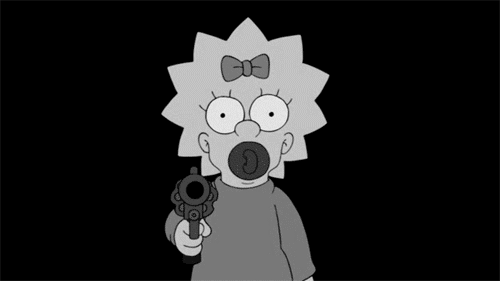

Margaret Evelyn Lenny "Maggie" Simpson[1][2] is a fictional character in the animated television series The Simpsons and a part of the Simpson family, notably the youngest member. She first appeared on television in the Tracey Ullman Show short "Good Night" on April 19, 1987. Maggie was created and designed by cartoonist Matt Groening while he was waiting in the lobby of James L. Brooks' office. She received her first name from Groening's youngest sister. After appearing on The Tracey Ullman Show for three years, the Simpson family was given their own series on the Fox Broadcasting Company which debuted December 17, 1989. From Seasons 1-7, she is one of the main characters. From Season 8 to present however, she is a recurring character, but gets a few episodes starring her. Maggie is the youngest child of Homer and Marge, and the younger sister to Bart and Lisa. She is often seen sucking on her red pacifier and, when she walks, she trips over her clothing and falls on her face (this running gag is used much more in earlier seasons). Being an infant, she has not yet learned how to talk. However, she did appear to talk in the first Tracey Ullman Show short. Though she rarely talks, she frequently makes a characteristic sucking noise with her pacifier, which has become synonymous with the character. Her pacifier sucking noises are provided by the show's creator, Matt Groening, and early producer Gabor Csupo. Maggie's occasional speaking parts and other vocalizations are currently provided by Nancy Cartwright, but she has also been voiced by guest stars Carol Kane, James Earl Jones, Elizabeth Taylor and Jodie Foster, and by series regulars Yeardley Smith and Harry Shearer. Maggie has appeared in various media relating to The Simpsons – including video games, The Simpsons Movie, The Simpsons Ride, commercials and comic books – and has inspired an entire line of merchandise
